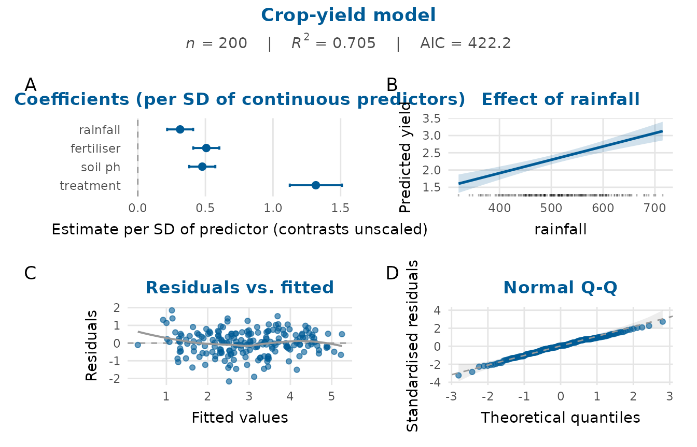
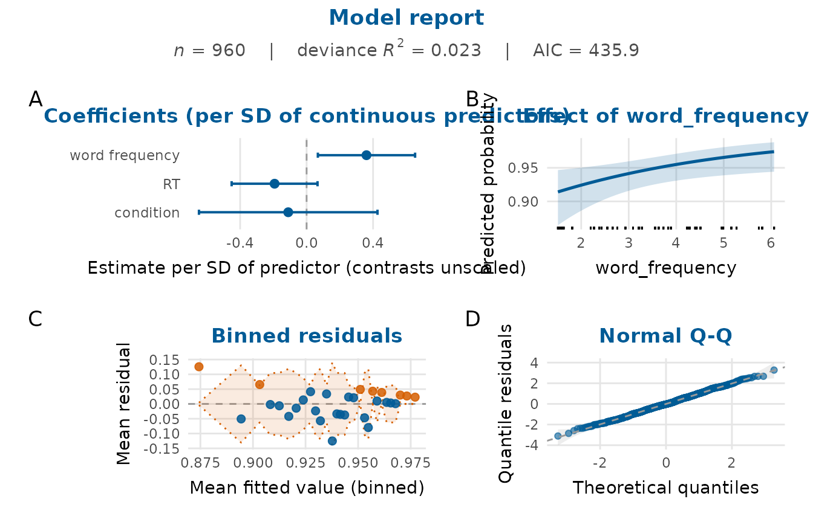

Assembles a compact, consistent overview of a fitted model in a single
figure: the coefficient estimates, the predicted effect of a focal predictor,
a residual panel and a normal Q-Q plot, with a subtitle of key fit
statistics. It is a convenience wrapper that composes several depictr
plots with arrange_plots(), and serves well for a rapid model review or a
report appendix.
Usage
model_report(
model,
predictor = NULL,
standardise = TRUE,
title = NULL,
subtitle = NULL,
glm_panels = TRUE,
seed = NULL
)Arguments
- model
A fitted
lmorglmmodel.- predictor
Focal predictor for the effect panel, given as in
effects_plot(). IfNULL, the first numeric variable in the formula (or, failing that, the first variable) is used, so a model withlog(rainfall)shows the effect ofrainfall.- standardise
Whether the coefficient panel scales each continuous predictor's coefficient by that predictor's standard deviation, leaving factor and binary contrasts in the outcome's units, as described for
standardiseincoefficient_plot(). Defaults toTRUE, which keeps the panel readable in this compact overview when the slopes are on very different scales. SetFALSEfor raw estimates.- title
Overall title.
- subtitle
Overall subtitle. If
NULL, a line of fit statistics (number of observations, R-squared and AIC) is used. For aglm, the R-squared is the deviance R-squared described inmodel_fit_table().- glm_panels
For a
glm, whether to draw the binned-residual and quantile-residual panels (the default) instead of the classiclmpanels. Ignored for anlm.- seed
Optional integer seed for the randomisation of discrete quantile residuals, for a reproducible Q-Q panel of a binomial or Poisson
glm. The caller's random number stream is left as it was.
Value
A 'patchwork' object (printable like a ggplot2::ggplot).
Details
For an lm, the residual panel plots the residuals against the fitted
values, and the Q-Q panel is qq_plot() of the standardised residuals. A
glm gets the panels residual_diagnostics_plot() draws for it
(glm_panels = TRUE). The residual panel is a binned_residual_plot()
(Gelman & Hill, 2007). The Q-Q panel plots randomised quantile residuals
(Dunn & Smyth, 1996), which are standard normal under a correctly specified
model whatever the response family, so the band of qq_plot() applies to
them. The standardised deviance residuals of a binary or count model are
not expected to be normal, so even a correctly specified model can put many
of them outside that band (about a third, in a simulated logistic model with
400 observations). The quantile residuals of a binomial or Poisson model are
randomised, and even under a correct model a run of them occasionally
leaves the pointwise band. A departure worth acting on persists when the
panel is drawn again with another seed. For a family with no quantile
residual here, such as a quasi-likelihood family, the Q-Q panel plots the
deviance residuals and its axis says so.
References
Gelman A, Hill J (2007). Data analysis using regression and multilevel/hierarchical models. Cambridge University Press, Cambridge, UK. ISBN 978-0-521-68689-1. doi:10.1017/CBO9780511790942 .
Dunn PK, Smyth GK (1996). “Randomized quantile residuals.” Journal of Computational and Graphical Statistics, 5(3), 236–244. doi:10.1080/10618600.1996.10474708 .
Examples
fit <- lm(yield ~ rainfall + fertiliser + soil_ph + treatment,
data = crop_yield)
model_report(fit, title = "Crop-yield model")

# A logistic model gets binned and quantile-residual panels, and a seed
# fixes the randomisation of its quantile residuals:
gfit <- glm(accuracy ~ word_frequency + RT + condition,
data = lexical_decision, family = binomial)
model_report(gfit, seed = 1)
